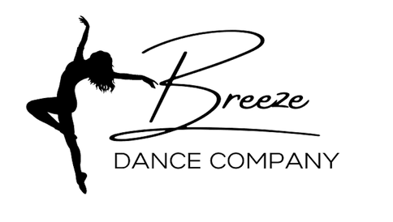

NIGHT TERRORS (Short Film)
Co-Director, Cameraman, & Music Composer
Created for SkillsUSA States, co-creator Olive Foote and I produced this short film from a random prompt and assigned line of dialogue, placing 4th overall.
Read more →Hey! I'm Nicholas Scott-Mendez (Nick or Nico for short). I'm an 18-year-old Digital Media Communications major at Houghton University, with a minor in Music Education. I create music compositions and arrangements, as well as typography, graphic designs, logos, and video productions ranging from vlogs and films to other creative projects.
Read more →
A selection of video work I've worked on.
Created for SkillsUSA States, co-creator Olive Foote and I produced this short film from a random prompt and assigned line of dialogue, placing 4th overall.
Read more →
Created for SkillsUSA Regionals, James Oliver and I competed in video production to create a one-minute-long video promoting SkillsUSA, placing 2nd.
Read more →This project is with all the Digital Media students to create a lip-synchronized song to "Take On Me" by a-ha, having all students sing.
Read more →
Created for a competition by The Warton Studio Museum, "Quiet On The Set" is a competition for making silent films. My team received an honorable mention.
Read more →
Breeze Dance Company hired me as a videographer to create 32 videos of their dancers, along with multiple camera angles and graphic designs for each video.
This 1-minute-long film was created as a project in my TST BOCES class. Jenny Carver and I decided to make a reality show-like film.
Read more →